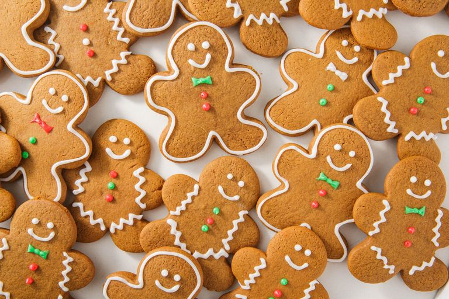

Introduction
The food you will be making today using this recipe is one of my favorites, the gingerbread cookie.
The gingerbread cookie is a simple and easy to make cookie that many people love and enjoy. As i
mentioned in the begining the gingerbread is one of my personal favorites because of the distinct ginger taste it has.
It is always a nice cookie to have with a warm cup of milk!

ingredients
here are some things you'll need!
- 3 cups all purpose flour
- 1½ teaspoons baking soda
- ¾ teaspoon baking soda
- ¼ teaspoon salt
- 1 tablespoon ground ginger
- 1¾ teaspoons ground cinammon
- ¼ ground cloves
- 6 tablespoons unsalted butter
- ¾ cup dark brown sugar
- 1 large egg
- ½ cup molasses
- 2 teaspoons vanilla
Instructions
follow these steps to make the best gingerbread cookies yet!
- In a small a small bowl, mix together all of your dry ingredients.
- In a large bowl, beat your butter, brown sugar, and egg on medium speed until well blended.Do not add in the molasse!
- Add the molassas in and continue to mix until well blended
- Slowly and gradualy stir in dry ingredients, mix until smooth.
- Divide the batch in half and let the dough rest at room tempurature for at least 2 hours.
- Preheat oven to 375°C. make sure to have to have your baking sheets prepared, lined with parchment paper.
- Take your dough, and roll out to prefered thickness. use cookie cutter to cut out the cookies or free hand it.
- Space the cookies apart so they dont stick together during the baking process, bake one sheet at a time for 7-10 minutes. (Shorter the bake time, softer the cookies!)
- Take the cookies out of the oven, let them cool and enjoy!